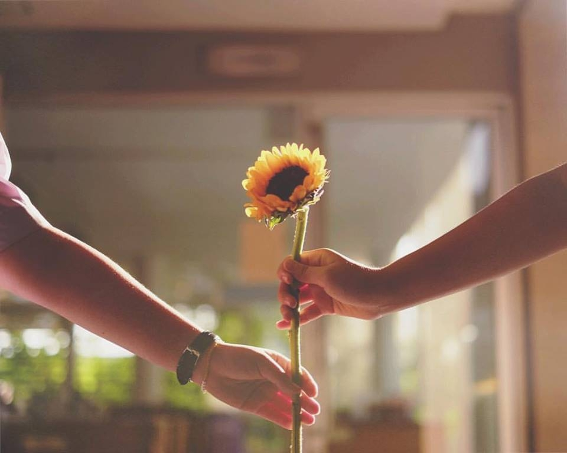

#KeepThisWithUs
Conservation
What would happen if one of your beloved things disappeared? What would it be if things that you know exist is just a myth for future generations? Those things could be saved if we have awareness on conservation.
Learn to
Keep a Thing
Conservation is a practice of protecting which primarily focus on maintaining good health of the natural world; an activity of systematically protecting resources. One aspect of the natural world is the biodiversity. Nowadays, the term conservation is not applied to the tern nature, but it also covers the concepts such as anthropology, cultural diversity and genetic diversity.
Nowadays, environmental issues such as the extinction of an endangered species and the importance of conservation are well aware by the people who are interested in environmental matters. However, what needs more attention is the subject of conserving cultures, especially local cultures. Cultures are not only threatened by the globalization of products and brands, but also by the desire to become closest to the world leading countries. People, especially in developing countries, often leave behind what they know and become the closest to the westerner as they can. This leads to the disappearance of various cultural practices and traditions.
Conservation is no activity
for a person.
In order to conserve we need start by raising the awareness of our own selves.
If people truly see the importance of what they want to
protect, people will surely act to conserve those things.
In conclusion, conservation is not only applied in the field of wildlife or biodiversity, but it is also mentioned in when talking about maintaining cultural diversity. A conservation movement could not be done by a person, but a group of people who see the value of what they want to protect. Every person has their own beloved things.
Because,
conservation is
humanity caring
for the future.
– Nancy Newhall
"Conservation is needed." -
said world.
| Be Respectful | Be Thoughtful | Do Good |